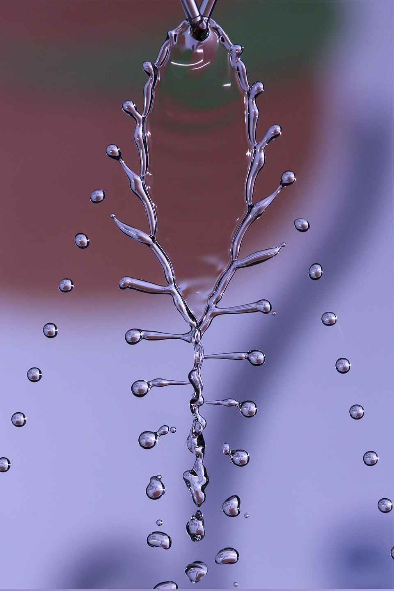
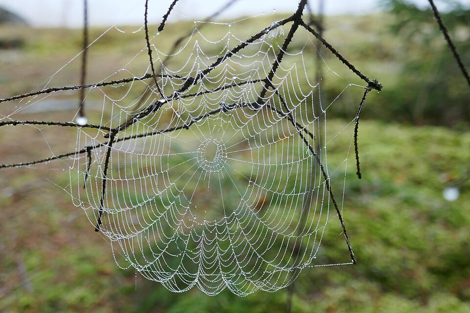

La tensión superficial que convierte un chorro en una fila de gotas
Abrí apenas la canilla y mirá el chorro. Arriba es una columna lisa, como de vidrio. Más abajo aparecen ondulaciones que se van acentuando, el chorro se estrangula en algunos puntos y, al final, ya no es un chorro sino una fila de gotas. Ese corte espontáneo se llama inestabilidad de Plateau-Rayleigh, y la causa es la misma fuerza que mantiene unido al chorro: la tensión superficial.

David Tong, de la Universidad de Cambridge, empieza por una pregunta: ¿qué mantiene unido a un chorro de líquido, por qué no se desparrama en todas direcciones? La respuesta es la tensión superficial [1]. Para estudiar solo ese efecto, Tong ignora la gravedad y piensa en una columna cilíndrica de líquido de radio R0, en la que la tensión superficial equilibra la presión de adentro [1]. John Bush, del MIT, resume en sus apuntes el trabajo de Plateau y de Rayleigh sobre esa columna, y señala que es justamente esta inestabilidad la responsable de que se corten los chorros finos de las canillas de la cocina [2].
Tong perturba la columna con ondulaciones a lo largo del chorro, que hacen que en algunos lugares sea más gruesa y en otros más fina [1]. Lo que pasa depende de la longitud de esas ondulaciones [1]:
La razón de fondo es que, para un mismo volumen, una fila de gotas tiene menos superficie que un cilindro largo (un razonamiento a partir de la tensión superficial, que tiende a achicar la superficie). La tensión superficial empuja a la columna a romperse.
Tong calcula que la ondulación que crece más rápido tiene una longitud de onda de unas nueve veces el radio del chorro [1]. Esa ondulación es la que termina eligiendo el tamaño de las gotas. Para un chorro de agua de canilla, estima que la perturbación crece y corta el chorro en alrededor de una décima de segundo [1].
El collar de perlas: imaginá un hilo de masa de modelar que se va afinando en algunos lugares y engrosando en otros. Los lugares gruesos se vuelven perlas y los finos, hilos cada vez más delgados que terminan cortándose. Un chorro de agua hace lo mismo, sin que nadie lo toque, porque la tensión superficial prefiere las perlas.

En un chorro real, la gravedad acelera el agua mientras cae. Tong muestra, con el teorema de Bernoulli, que el efecto más importante de la gravedad no es sobre las ondulaciones sino sobre la forma del chorro: como el agua va cada vez más rápido, el chorro tiene que afinarse para que pase el mismo caudal [1]. Por eso el chorro de la canilla se angosta al caer, y cuanto más fino, más pronto se rompe (un razonamiento a partir de la estimación de Tong, en la que el tiempo de ruptura crece con el radio).
Según MacTutor, el físico belga Joseph Plateau empezó en 1840 a estudiar las formas de los líquidos y las superficies mínimas, y en 1843 quedó completamente ciego [3]; Bush cuenta que siguió con sus experimentos de todos modos [2]. Bush lo recuerda como uno de los grandes investigadores de los fenómenos capilares, las películas de jabón, las gotas y las burbujas [2]. Su historia se cuenta en las pompas de jabón.
Otra inestabilidad de superficie: el chorro se rompe por tensión superficial sin necesidad de ningún viento. En cambio, en la inestabilidad de Kelvin-Helmholtz lo que desestabiliza la superficie es la diferencia de velocidad entre dos capas, y la tensión superficial ayuda a frenarla [1].
Un chorro de líquido es una forma inestable: la tensión superficial, que lo mantiene unido, lo empuja también a convertirse en gotas, porque así tiene menos superficie. Las ondulaciones más largas que la circunferencia del chorro crecen, la más rápida mide unas nueve veces el radio y fija el tamaño de las gotas. La gravedad afina el chorro al caer y acelera la ruptura.
Pregunta para la comunidad: Si el chorro de tu canilla tiene unos 2 mm de radio, ¿cada cuántos milímetros esperás que aparezcan las gotas según la estimación de Tong? Medilo con una foto con flash y compará.